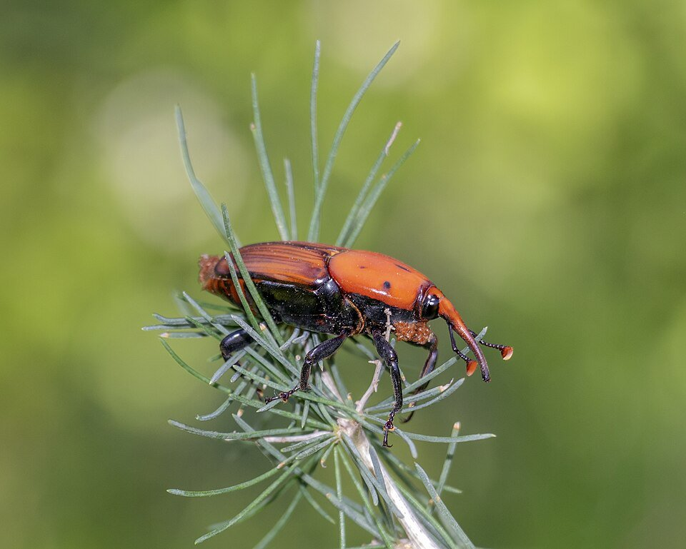
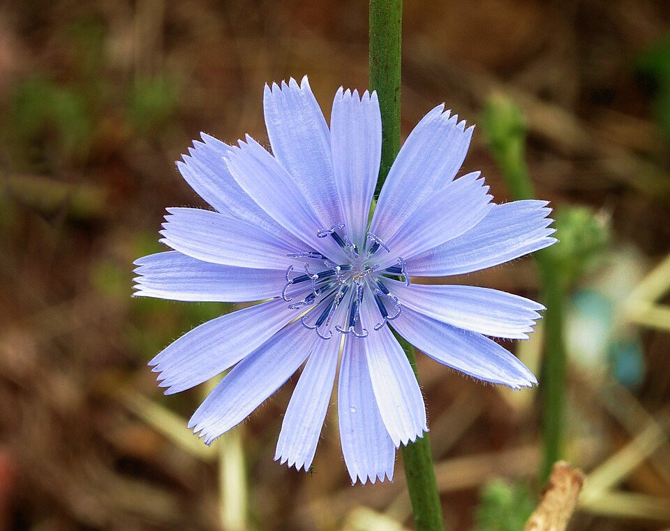
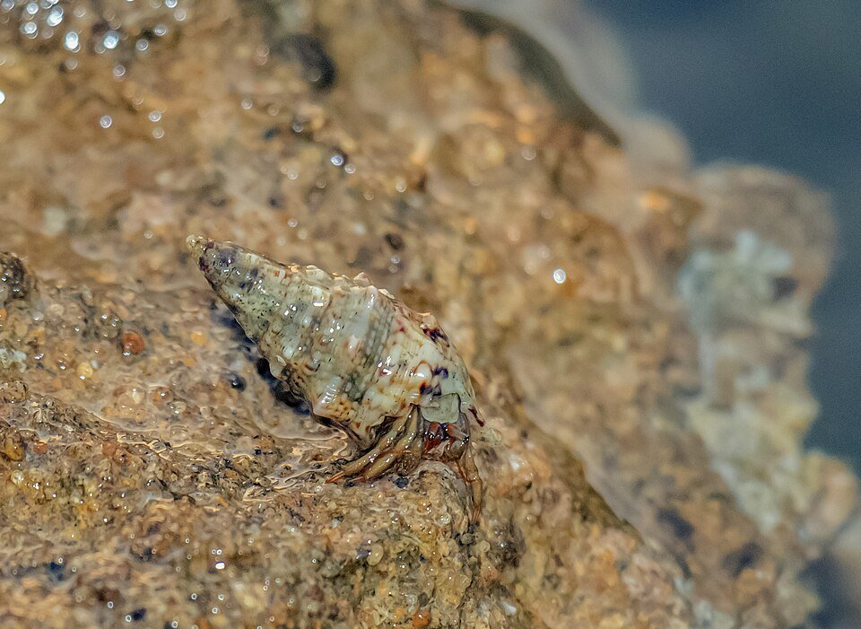
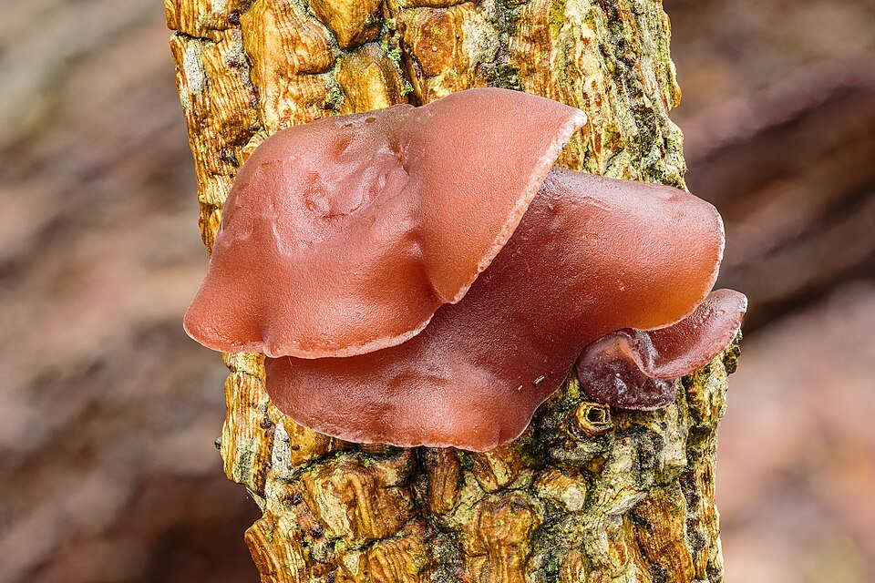
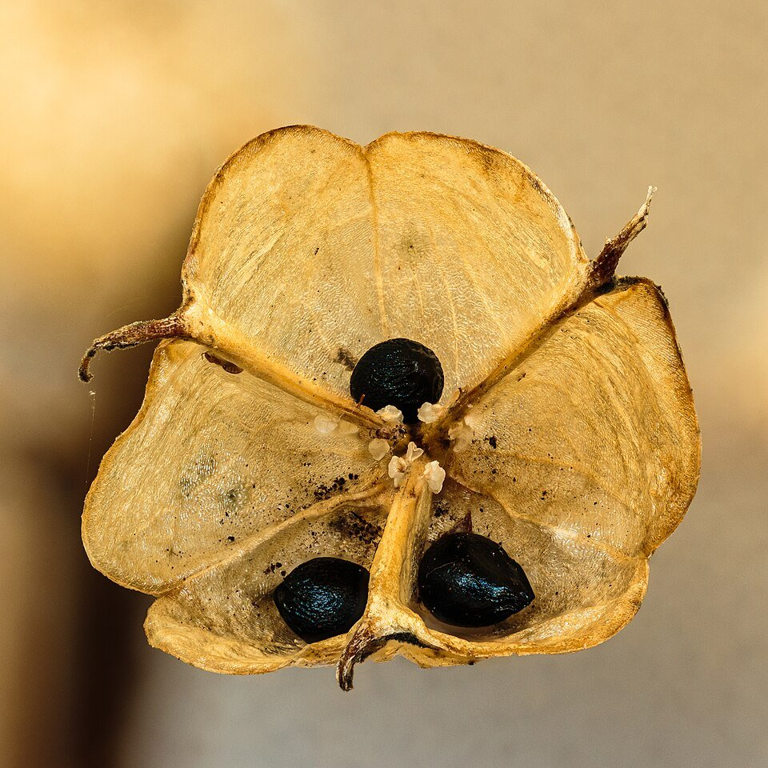
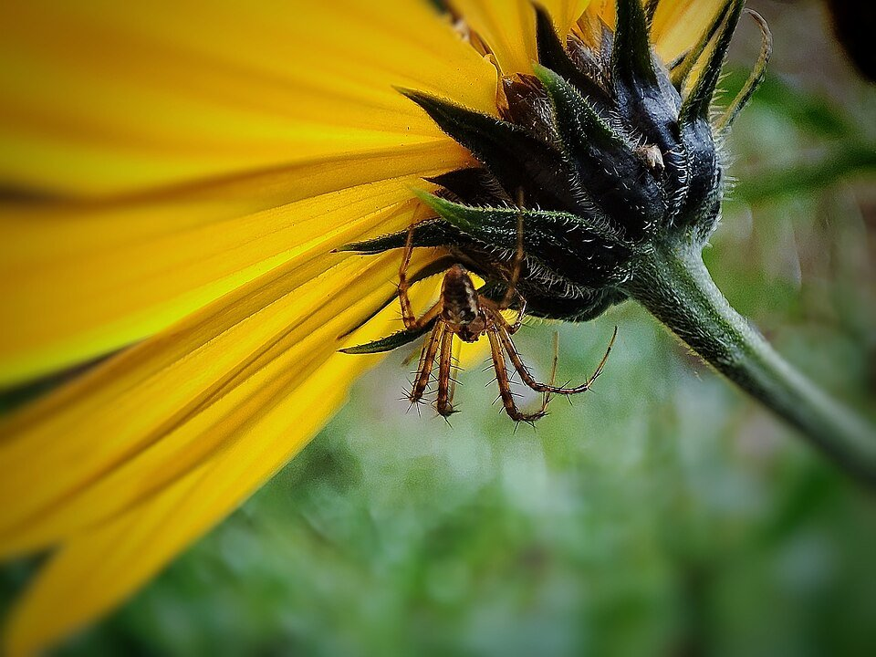
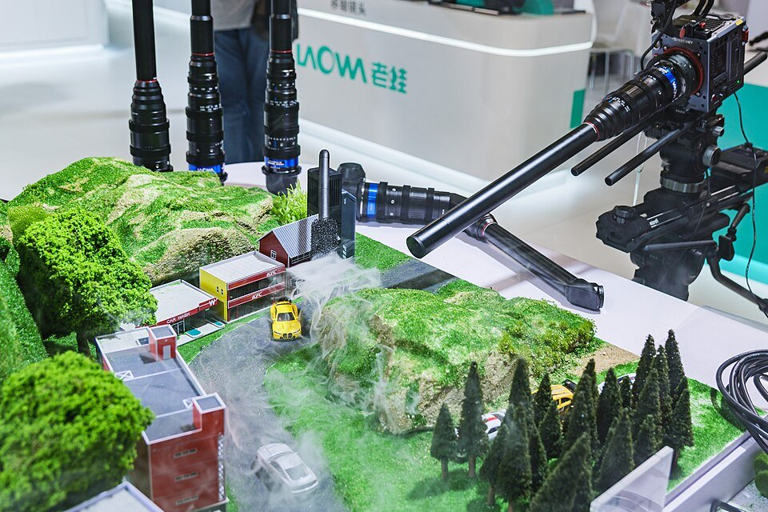
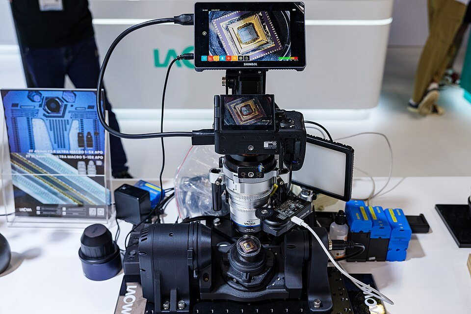

Macro
Petals, textures, tiny details the eye walks past every day. Macro work that slows down and looks properly.
Book a session: 89190 02486Enquire online








31 photos in this collection. Select any photo to view it larger.